The Menu
Signature Dishes
A curated selection of dishes that define Chef Marco's culinary identity — fewer ingredients, higher quality, perfect technique.
"Every dish I create is a reduction — of complexity, of noise, of everything that doesn't need to be there. What remains is the truth of the ingredient."

Pan-Seared Wild Sea Bass
Crispy skin, saffron-fennel purée, sea herb oil, reduced bouillabaisse jus. A dish of restraint — the sea speaks for itself.
European
Mediterranean Medley
Saffron rice, roasted pepper foam, spiced kofta, braised aubergine with pine nuts, and beet salad. A celebration of the Mediterranean table.
Mediterranean
Japanese Sushi Selection
Torched salmon, tiger prawn nigiri, bluefin tuna, tobiko rolls, wakame, ikura — a curated platter built on the finest market catch.
Japanese
Nonya Pie Teh & Prawn Ball
Traditional Peranakan street-food elevated for grand-scale service — delicate pastry cups filled with braised turnip, topped with prawn balls. Executed for 1,000 guests without compromise.
Peranakan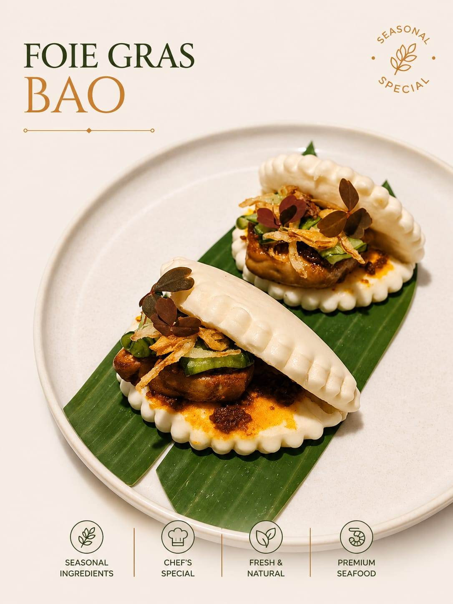
Foie Gras Bao
Seared foie gras nestled in a pillowy steamed bao, with caramelised onion, pickled cucumber, and micro herbs. East meets West in every bite.
Asian Fusion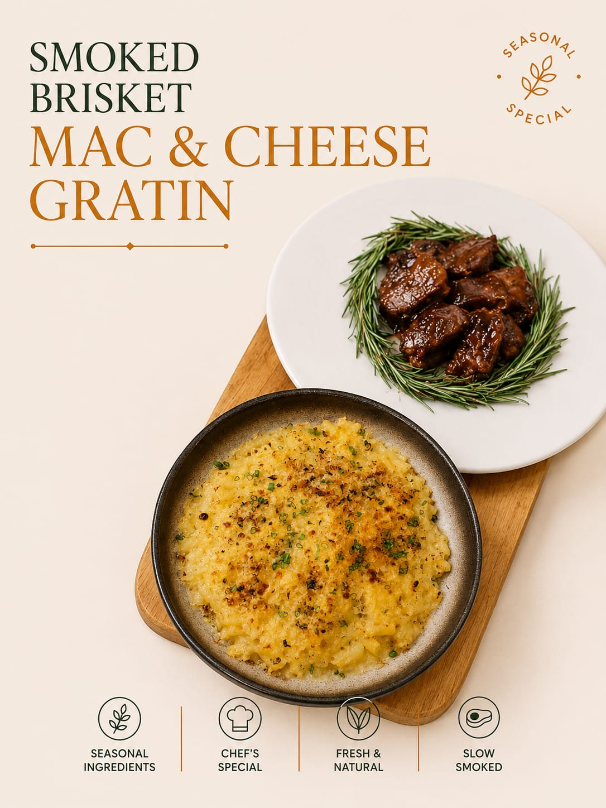
Smoked Brisket Mac & Cheese Gratin
Slow-smoked beef brisket alongside a golden-crusted macaroni gratin — comfort elevated to fine dining, finished with fresh rosemary and a glossy reduction.
Chef's Special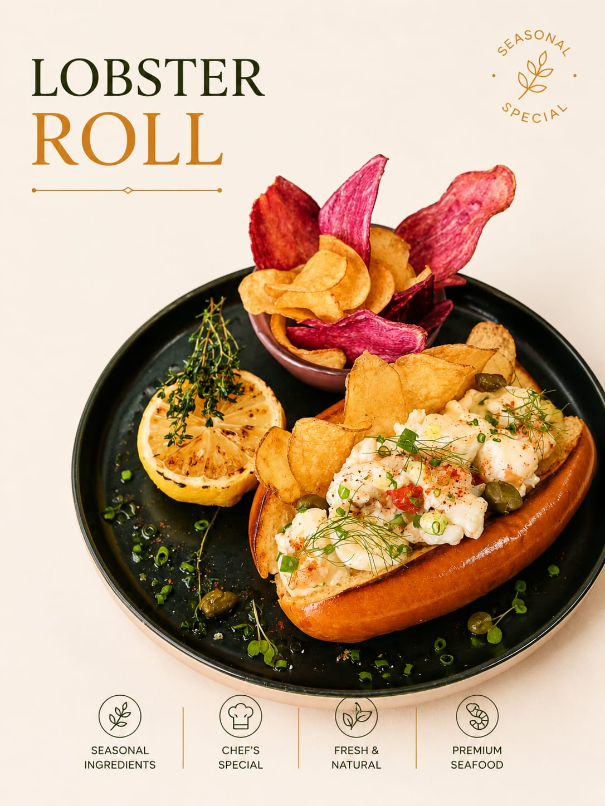
Lobster Roll
Premium lobster in a toasted brioche bun with capers, chive, charred lemon, and house-made vegetable chips. Clean, generous, and unapologetically indulgent.
Seafood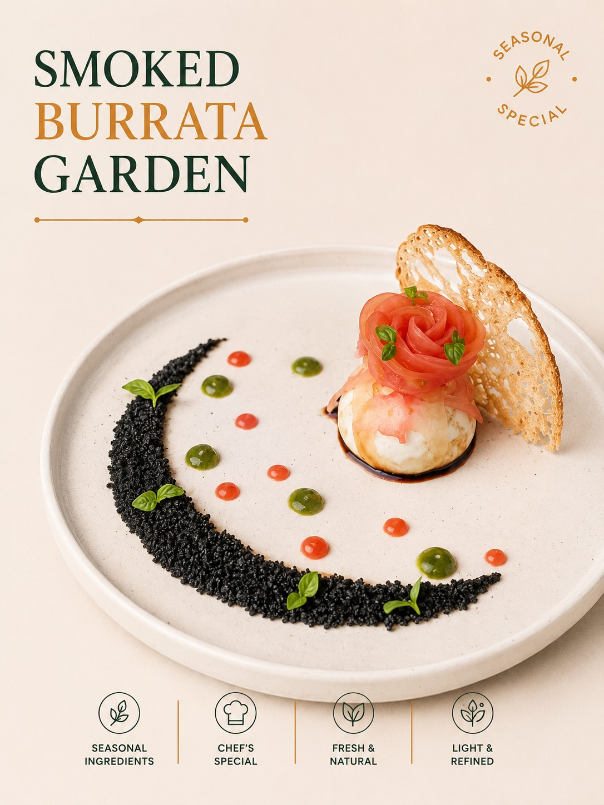
Smoked Burrata Garden
Cold-smoked burrata on black sesame soil, tomato rose, basil oil dots, tomato water drops, and a parmesan tuile. Art on a plate — light, refined, seasonal.
Italian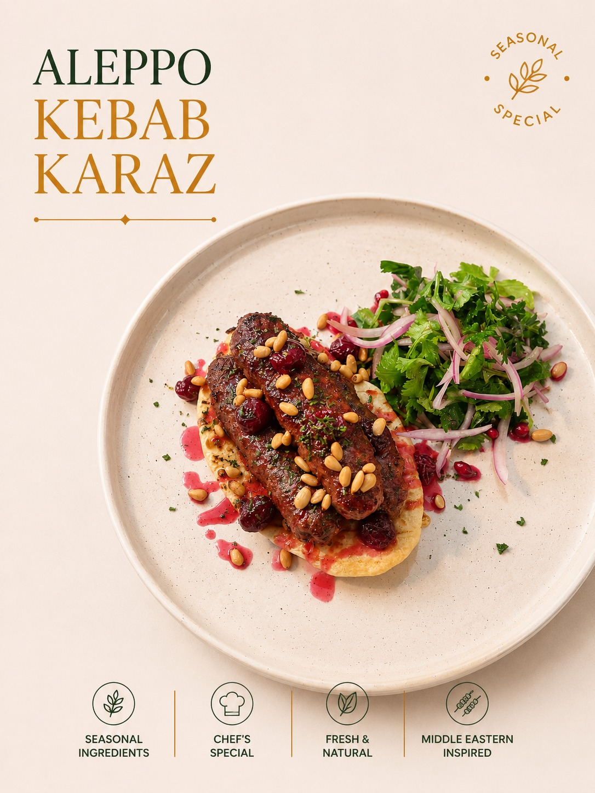
Aleppo Kebab Karaz
Syrian-style spiced lamb kebab with sour cherry reduction, toasted pine nuts, and a fragrant herb salad. A journey to the Levant — bold, aromatic, and deeply satisfying.
Middle Eastern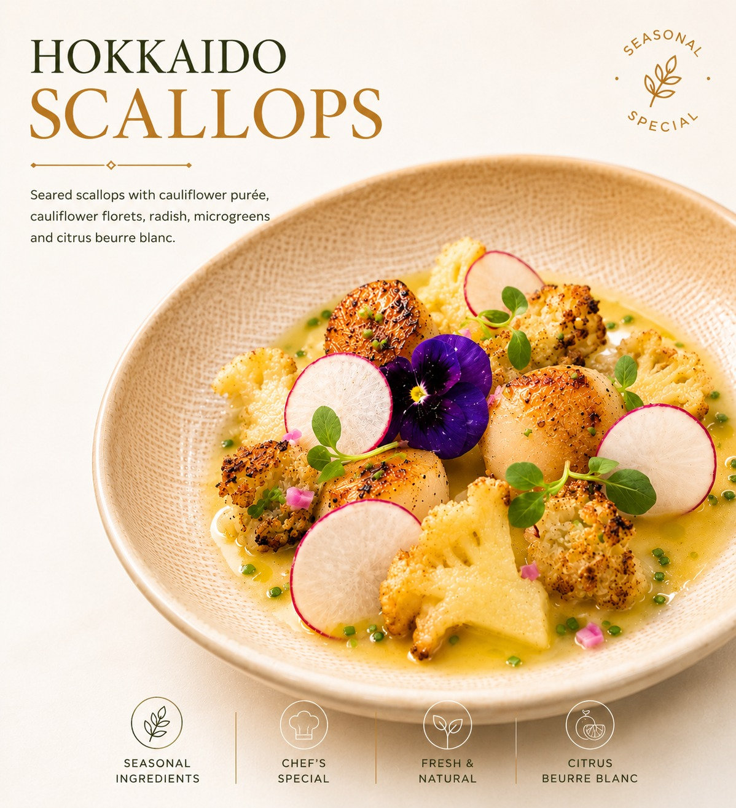
Hokkaido Scallops
Seared scallops with cauliflower purée, roasted cauliflower florets, radish, microgreens, and a bright citrus beurre blanc. Purity of the sea on a plate.
Seafood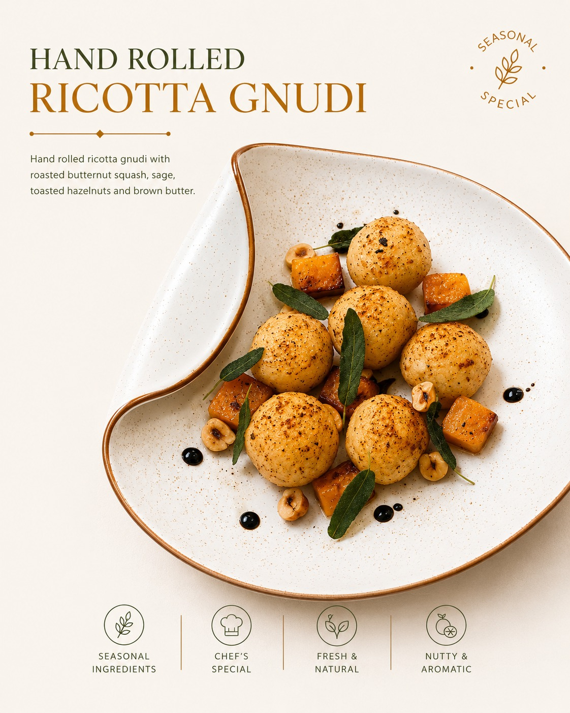
Hand Rolled Ricotta Gnudi
Pillowy ricotta gnudi with roasted butternut squash, crispy sage, toasted hazelnuts, and nutty brown butter. Autumn on a plate — warm, aromatic, refined.
Italian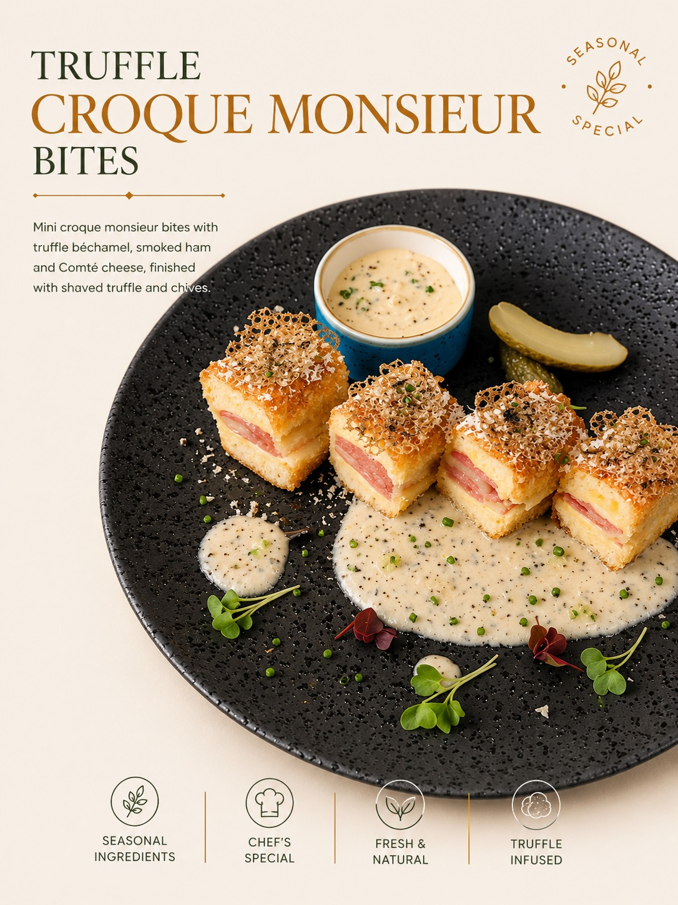
Truffle Croque Monsieur Bites
Mini croque monsieur with truffle béchamel, smoked ham, and Comté cheese — finished with shaved truffle, chive, and a crispy cheese tuile. Classic French, luxuriously elevated.
French ClassicVIP Set Menu · 2,000 Guests
A Menu Built for Scale & Refinement
Three-course VIP set menu executed flawlessly at grand-scale — proof that luxury does not diminish with volume.
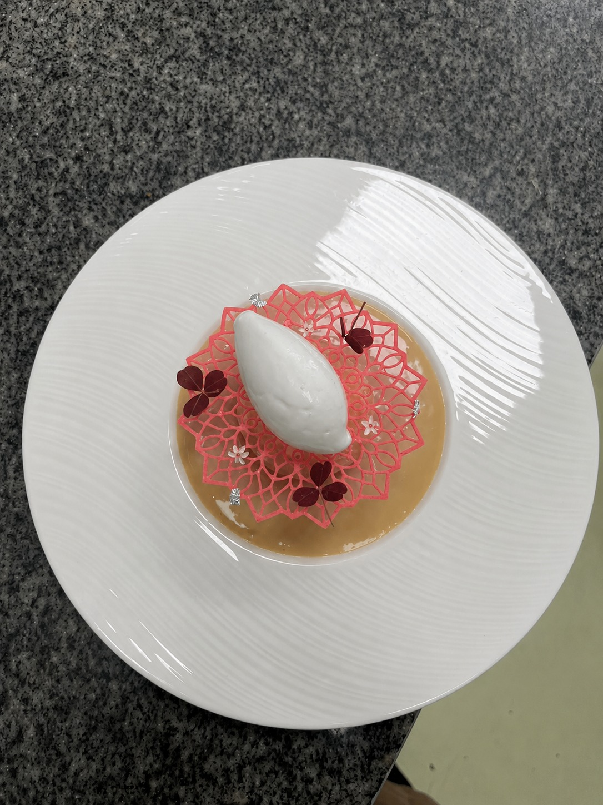
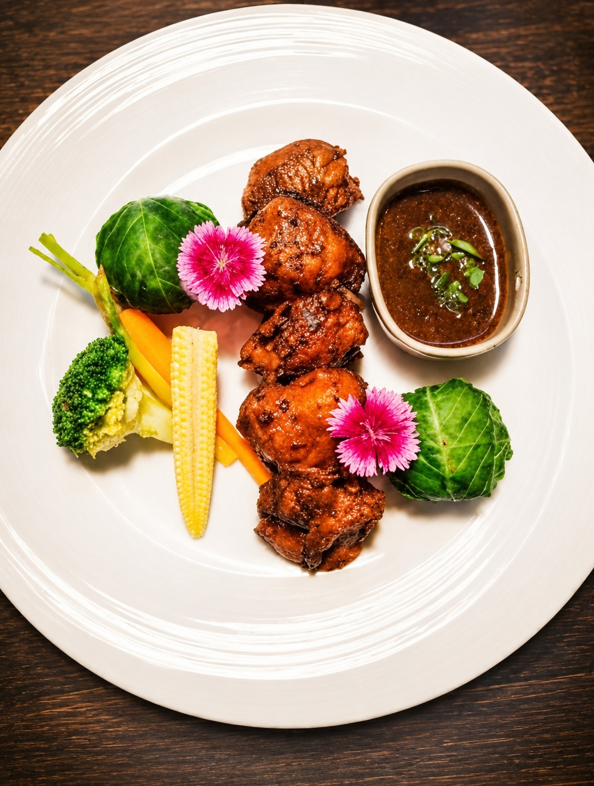
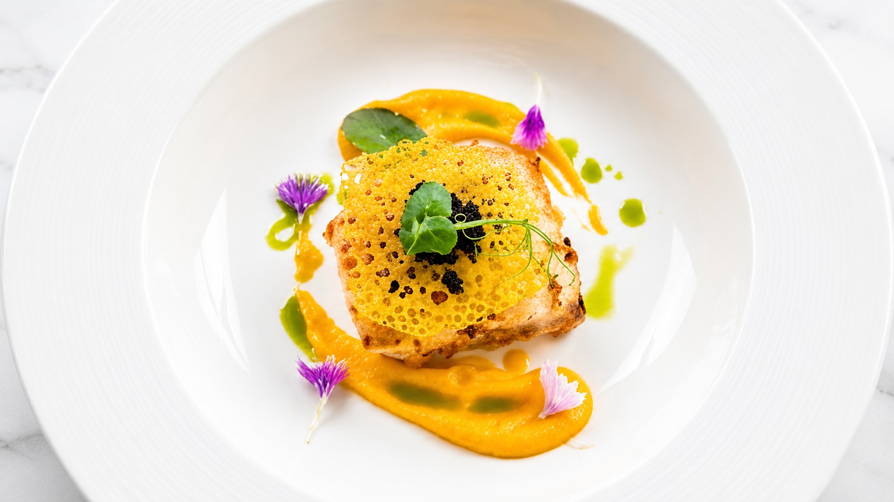